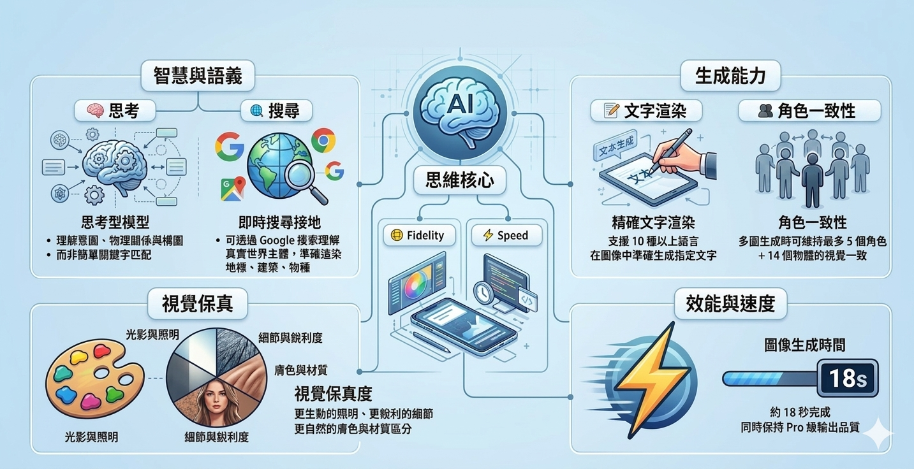

Google 最新 AI 圖像生成模型完整攻略，從提示詞結構到 10 個實用模板，一頁掌握專業級圖像生成技巧。
Google DeepMind 於 2026年2月26日正式發布的新世代 AI 圖像生成模型

| 特性 | Nano Banana 1 NB1 | Nano Banana 2 NB2 | Nano Banana Pro Pro |
|---|---|---|---|
| 技術名稱 | Gemini 2.0 Flash Image | Gemini 3.1 Flash Image | Gemini 3 Pro Image |
| 發布時間 | 2025年 | 2026年2月26日 | 2025年11月 |
| 速度 | 最快 | 快 | 較慢 |
| 價格 | 最低 | 中等 | 最高 |
| 視覺接地（Grounding） | ❌ 無 | ✅ 有 | ✅ 有 |
| 複雜指令遵循 | 一般 | 優秀 | 最優秀 |
| 文字渲染 | 基礎 | 優秀 | 優秀 |
| 輸入上下文窗口 | 較小 | 131,072 tokens | 65,536 tokens |
| 角色一致性上限 | 無 | 5角色 + 14物體 | 5角色 + 14物體 |
每一個有效的 Nano Banana 2 提示詞都應涵蓋以下要素（不需全部，但越具體越好）
主體是誰或什麼
發生什麼事 / 狀態
環境 / 場景 / 時間天氣
構圖 / 鏡頭 / 角度
光線 / 情緒
藝術或攝影風格參考
明確說明不要什麼
掌握這些技巧，讓你的提示詞從「可用」提升至「專業」
NB2 是思考模型，理解意圖而非匹配關鍵字。用自然語言描述你想要的畫面。
提到真實相機、菲林、鏡頭型號，NB2 會精確模擬這些設備的視覺行為。
想在圖像中顯示特定文字，必須用雙引號包圍，否則可能被當成構圖指令。
一個好的參考詞可以一次激活多種視覺關聯，是最高效的提示詞捷徑。
清楚告訴模型「不要」什麼，通常比只說「要」什麼更有效。
圖像 80% 正確時，不要全部重來，給出精確的修改指令即可。
資產類型 + 比例決定生成方向，不指定比例會使用預設，可能不符需求。
整合兩份文件精華，可直接複製修改使用
一位穿著淺色風衣的男子站在雨天的香港旺角街道上，濕潤的路面有霓虹燈倒影。寫實攝影風格，35mm鏡頭，中景，淺景深，夜晚冷色調，左側軟主光加暖色邊緣光分離主體與深色背景。不要文字，不要浮水印，不要其他路人。
建立一張 3:4 直向的課程宣傳海報，主體是一隻正在接受年青學員護理的可愛柴犬，背景是溫暖的室內環境。畫面上方居中顯示：「香港基督教女青年會」，字體為粗體無襯線字，顏色為品牌藍色。畫面中央顯示：「寵物護理員基礎證書課程」，字體為粗宋體，顏色為專業深灰。畫面下方居中顯示：「現正招生｜ERB課程」，字體為中等粗細，顏色為淺灰色。暖色調，活潑正面氛圍，乾淨專業的商業設計。所有文字必須準確無誤。
尖沙咀香港文化中心與幻彩詠香江夜景，標準視角從九龍一角拍攝，金黃色人造光源與城市倒影交織。寫實攝影，Canon EOS R5，24mm廣角鏡頭，三腳架長曝光，乾淨的構圖，無多餘人物。確保建築輪廓與實際外觀一致。
以這張圖片為角色參考，生成4張同一角色的不同場景：圖1在維多利亞港看夜景，圖2在茶餐廳吃早餐，圖3在太平山頂遠眺，圖4撐傘走在中環街道。每張圖中角色的黑色短髮、白皙皮膚、紅色外套必須與原圖完全一致。寫實攝影風格，電影感色調。
保持原圖中人物與場景的構圖和位置完全不變，將圖像轉換為水彩插畫風格：柔和暈染邊緣、紙張質感、溫和的色彩暈開。顏色應更明亮但不過度飽和。不要添加新元素，不要移動主體，不要添加文字。
一個透明玻璃香氛蠟燭罐，啞光磨砂白色罐身，品牌名稱以金色燙金字體印於正面下半部，頂部有木質圓形蓋。產品置於畫面中央，45度斜側角度，淺灰漸層背景。工作室商業攝影，均勻柔光箱光源，精準還原玻璃通透感與木蓋質感。不要背景裝飾物，不要浮水印，不要文字。
4格橫向漫畫分鏡，比例 4:1，講述一個穿校服的高中生在茶餐廳點了一杯鴛鴦，卻發現杯子裡是菠蘿油的故事。使用日式少年漫畫風格，清晰的黑線稿配網點紙。角色穿白色襯衫、深藍色西裝褲、黑色皮鞋，保持所有格子一致。第四格加入爆炸效果框強調角色驚訝表情。
建立一張 4:5 的繁體中文資訊圖表，主題是香港十大必吃傳統美食，包含5個主要資訊區塊：菠蘿油、蛋撻、奶茶、雲吞麵、咖哩魚蛋。使用傳統香港茶餐廳風格配色（米白、紅、綠、奶白），大字標題，副標題解釋，乾淨現代的版面設計，每個美食區配有插圖化呈現。
在原圖街道場景的右側加入一台經典紅色的士，停在路邊。紅色車身乾淨有光澤，金色車牌。車身受左側路燈暖光照射，投影方向與原圖其他車輛一致。透視角度為輕微仰視，符合街道消失點透視。不要遮擋主體人物，不要改變整體電影感色調，保持所有現有元素位置不變。
建立一個 iPhone 17 Pro 上的繁體中文天氣應用介面截圖，主畫面顯示當前天氣卡片（28度，多雲，屯門區）、未來6小時逐時預報橫向列表、九日天氣概覽。使用極簡現代設計語言，主色調為藍白漸變，卡片圓角16px，輕柔陰影。乾淨的高保真 Mockup 截圖，狀態列乾淨無干擾字樣，背景模擬真實室內場景。
基於 Google 官方文件的完整技術規格摘要